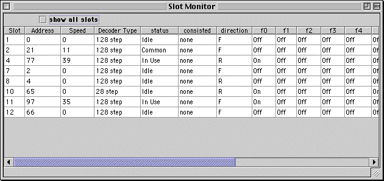
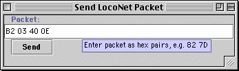
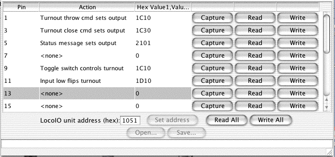

LocoNet™ Tools
LocoNet is a trademark of Digitrax, Inc.
The JMRI project contains a number of LocoNet tools. This page introduces them, describes how to use them, and points you to installation and other information.
- LocoNet monitor
- Display and log the traffic on the LocoNet, in either hex or human readable form.
- Slot monitor
- Watch the contents of the command station's slots as they're changed.
- Packet source
- A tool to let you type and send packets to the LocoNet
- BDL16, BDL162 and PM4 programmers
- A tool to let help you configure BDL16, BDL162 and PM4 boards.
- LocoIO programmer
- A tool to let help you configure a LocoIO board.
These tools also present in the JMRI demo program, and to some extent in DecoderPro. And, of course, you can build them into a program of your own! The LocoNet Tools program is simply a convenient platform for finding and accessing these features.
The libraries also contain utilities for controlling your layout (operating turnouts and signals, responding to inputs and block occupancy, etc), for programming decoders, and others. These are not LocoNet specific, so are described elsewhere on this web site.
-

-
LocoNet Monitor
The LocoNet Monitor tool displays LocoNet traffic in a human-readable form. The last 20 messages are available in a scrolling window. Optionally, you can include the time the message was received, and/or the raw packet bytes. The log information can also be stored in a text file.
- 
-
Command Station Slot Monitor
The Slot Monitor tool displays a table of the "command station slots'" contents. Slots are used to control individual locomotives and consists. The display includes the decoder's speed step format, current speed and function settings, consist information and status. You can choose to show either all slots or just the ones being actively used.
- 
-
Packet source
The Send Packet tool lets you type in a LocoNet packet and send it to the layout. You type the packet in hexadecimal as pairs of characters, in the same way its displayed in the LocoNet monitor.
- No screen shot available
-
BDL16, BDL162 and PM4 programmers
The PM4 programmer and BLDL16 programmer tools provide a simple graphic interface for configuring Digitrax power and block-occupancy boards. Each "option switch" is shown as a checkbox on the screen. You can read the current contents from the board, and write your changes back easily. There is no need to remove the board from the layout, or climb underneath the layout to push buttons, as all programming is done via the board's LocoNet connection.
- 
-
LocoIO programmer
The LocoIO programmer provides a simple interface for configuring John Jabour's LocoIO board, a powerful component for building CTC boards and control panels. (More information on the board is available at http://www.locobuffer.com/LocoIO.htm)
A LocoIO board has 16 signal pins, each of which can be programmed as an input or output, and to do a number of different things. The board is also sometimes described as having 16 channels.
The channels are configured via LocoNet messages. The LocoIO programmer uses a table to represent the configuration of each channel.
The "Action" column is used to select how the channel behaves. Click in a cell to be given a menu of available choices. Currently, the choices are:
- "Toggle switch controls turnout"
Generate a OPC_SW_REQ to close/throw a turnout when a toggle switch changes state. When the input goes high, a "close" command is sent; when the input goes low, a "throw" command is sent. The channel configuration value is 0x0F.
- "Input low flips turnout"
Generate a OPC_SW_REQ LocoNet message when the input goes low. This is intended for use with a momentary pushbutton. The command sent will alternate the position of the addressed turnout or signal; if "close" was last sent, a "throw" will be sent now and vice-versa. The channel configuration value is 0x2F.
- "Input high flips turnout"
Generate a OPC_SW_REQ LocoNet message when the input goes high. This is intended for use with a momentary pushbutton. The command sent will alternate the position of the addressed turnout or signal; if "close" was last sent, a "throw" will be sent now and vice-versa. The channel configuration value is 0x6F.
- "Status message sets output"
-
Drive an output from OPC_INPUT_REP input status messages on the LocoNet. The output goes high when an "input high" message is received, and goes low when an "input low" message is received. These messages are also used for block occupancy status; the output will go high when the block is occupied, and low when its empty. The channel configuration value is 0XC0.
- "Turnout close cmd sets output"
-
Drive an output on the LocoIO board from received OPC_SW_REQ commands. The channel configuration value is 0x80. This adjusts the address field to look for a command that sets the turnout "closed".
- "Turnout throw cmd sets output"
-
Drive an output on the LocoIO board from received OPC_SW_REQ commands. The channel configuration value is 0x80. This adjusts the address field to look for a command that sets the turnout "thrown".
The "Hex Value1,Value2" column sets the address that the LocoIO board will use for LocoNet communications. This contains a hexadecimal representation of the two configuration values described in John Jabour's LocoIO programming guide. You generally won't need to figure out these addresses, as the buttons will find them for you.
We're also planning to have a "User Address" column that will show the human-readable address for turnouts and sensors. For turnout messages, this is the same number that you would use on your throttle. For block occupancy messages, this is the block number. For input status messages, this is the input number, which is twice the number of the associated turnout, plus one if its a DS54 "switch" input.
The button reads from the LocoIO board via the LocoNet and shows the current configuration for that pin. The button stores the current settings to the LocoIO board.
The button provides an easier way to find a needed LocoNet address. Configure the input and output for a particular pin, then press the button. The address in the next LocoNet message of the right type will be put in the address column.
For example, if you have a channel set to act when a "Turnout closed status message" is received, press the button and use your throttle to command the correct turnout closed.
As another example, if the channel is configured to send a "Send throw turnout command", press the button and use your throttle to command the correct turnout thrown.
At the bottom of the table are some general controls. The LocoIO address field sets the address of the board being programmed. LocoIO processors are sent with an address of 1051 programmed; see below for how to change that. Address "0" is a global address which any LocoIO board will respond to; make sure you have only one connected when you use that!
The button will use the global address to configure a specific address into a LocoIO board. Again, make sure you have only one connected. (This button is disabled in the current version while we sort out a problem)
The and buttons are not yet implemented. They will eventually allow you to load and store configuration files.
The and buttons read or write all of the channels, and are just a convenience.
Status messages during capture/read/write are displayed at the bottom of the window. If no response is heard from the LocoIO unit, the operation will be retried until it succeeds or until you close the window.
{kind=link}
{kind=link}
{kind=link}
Thanks and congratulations to all who contributed!
Copyright © 2003,2004 JMRI Community
Site hosted by: